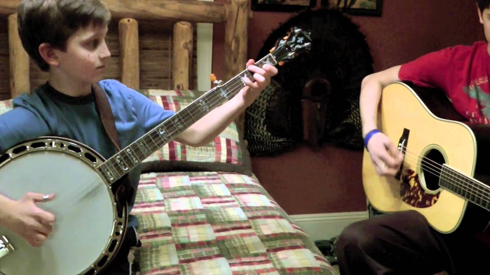
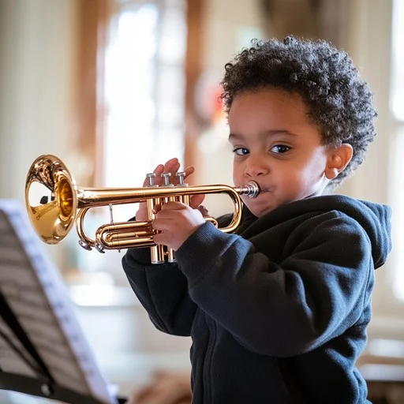
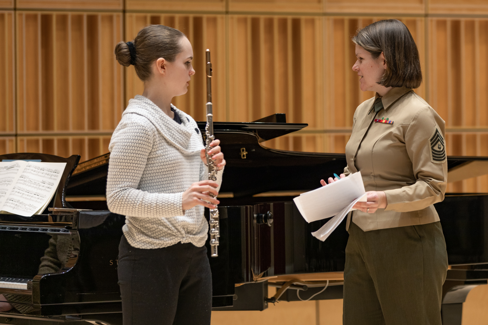
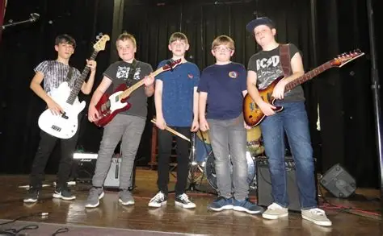

Scott Leithead
Choral director and clinician known for his work with youth choirs across Canada.
Join student bands and choirs from across the region for three days of performances, learning, and community in November 2025.
View the full festival schedule



The Comox Valley Band Choir Festival is a non-competitive educational festival featuring concert bands, jazz bands, and choirs from middle and secondary schools.
Ensembles perform on stage, receive feedback from professional adjudicators, and participate in workshops designed to support growing musicians.
Plan your festival experience with our detailed daily schedule for bands and choirs.
| Day | Focus | Example Events |
|---|---|---|
| Monday, November 17 | Concert Choirs | Morning performances, afternoon clinics |
| Tuesday, November 18 | Concert Bands | Sectionals, evening showcase concert |
| Wednesday, November 19 | Concert Bands | Final performances, closing remarks |
Our adjudicators are experienced conductors and music educators who provide supportive, constructive feedback to every ensemble.
Choral director and clinician known for his work with youth choirs across Canada.
Music educator and conductor with a focus on developing young musicianship.
Veteran band conductor and adjudicator with decades of festival experience.

Student musician receiving feedback from an adjudicator.
First performance of the festival.

Last talent show performance of the festival.
Performances take place at venues in the Comox Valley. Check your confirmation package for detailed locations and bus information.